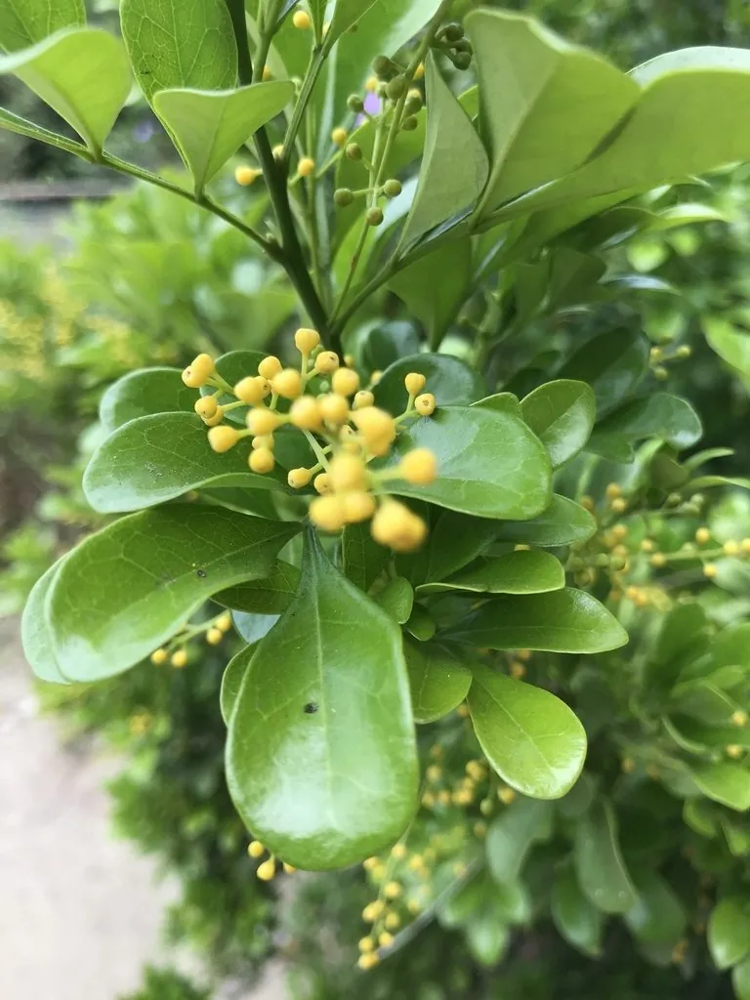

灌木与花木 · 植物界
米兰 Aglaia odorata

中国南方常见的常绿灌木，四季开细小如米粒的黄色花朵、香气清甜，是庭院与盆栽的优良香花植物。
- 分类
- 门被子植物门纲木兰纲目无患子目科楝科属米仔兰属
- 栖息环境
- 海拔 800 米以下的热带亚热带地区，喜温暖湿润、光照充足
- 地理分布
- 中国广东、广西、福建、云南等地，东南亚也有分布
- 保护级别
- 暂无评估；中国未列入国家重点保护野生植物名录
物种志
米兰为常绿灌木或小乔木，高可达 3 m，小枝细弱；羽状复叶互生，小叶 3–7 枚，倒卵形至椭圆形，革质、有光泽。花期长，在温暖地区几乎全年开花，圆锥花序腋生，花小、黄色、极芳香，花径仅 2–3 mm，形似小米粒，故得名“米兰”；浆果近球形，成熟时橙红色，内含 1–2 粒种子。
米兰原产中国广东、广西、福建、云南等地及东南亚，中国南方广泛栽培，喜温暖湿润、光照充足，适宜疏松肥沃、排水良好的微酸性土壤，不耐寒。因花小如米、香气清甜、花期长，常被栽培于庭院、阳台与公园，北方多作盆栽，冬季需移入室内。花可提取芳香油，用于调制香精与窨制花茶；木材细致，可用于雕刻。米兰与九里香同属无患子目，但米兰的花小如米、香气清甜，与九里香的白花浓香不同。
形态与习性
- 株高可达 3 m，小枝细弱
- 花期全年可开，以夏秋最盛
- 果期少见结实，浆果橙红色
- 光照喜光，不耐长期荫蔽
- 水分喜湿润，怕积水
- 土壤微酸性、疏松肥沃的壤土
- 主要用途庭院与盆栽观赏、花提取芳香油、木材雕刻
趣味知识
- 米兰的花只有米粒大小、黄色芳香，因此得名“米兰”，也叫“米仔兰”。
- 米兰在温暖地区几乎全年开花，是花期很长的香花植物。
- 米兰不耐寒，北方栽培多为盆栽，冬季需移入室内越冬。
- 米兰的花可提取芳香油，用于调制香精与窨制花茶。